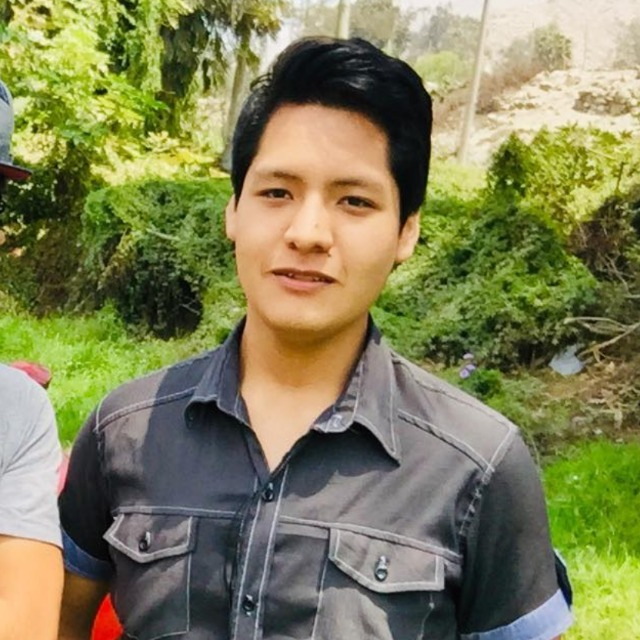

Kevin Pariona Trujillo
Producto Owner

Francisco Ocaña Jara
Scrum Master

Gloria Quispe Poma
Team Scrum

Marco Antonio Angulo Flores
Team Scrum

Alex David Palacios Gutierrez
Team Scrum
Desarrollar una aplicación web funcional, segura y de fácil uso no solo para el administrador de Muebleria Trujillo sino también para las personas que deseen contar con los servicios de esta empresa. Así mismo contará con un panel de gestión de pedidos y un método de control de pagos.
Jean Piere Jara Solis
Stake Holder
1.- ¿Cómo funciona su negocio?
2.- ¿Cuántos trabajadores tiene en su negocio?
3.- ¿Cuál es la necesidad que desea cumplir?
4.- ¿Cuántos clientes recibe por día o por semana?
5.- ¿Desea que se desarrolle una aplicación para móviles o una aplicación web?
6.- ¿Es usted la persona que administra la aplicación o se designará a otra persona?
7.- ¿Qué funcionalidades de administrador le gustaría que presentará esta aplicación?
8.- ¿Qué funcionalidades de usuario (cliente) le gustaría que presentará esta aplicación?
9.- Respecto a la opción de brindar muebles personalizados, ¿qué funcionalidades le gustaría que tenga este apartado?
10.- Sugerir apartado de favoritos, ¿está de acuerdo con esto?
11.- ¿Desea alguna otra funcionalidad de la aplicación aparte de las ya mencionadas?
12.- Mencionar todas las funcionalidades por parte del administrador y del usuario, ¿es correcto todo lo mencionado o tiene alguna variante?
13.- ¿Tiene alguna duda o sugerencia extra?
Para nuestro proyecto identificamos dos usuarios para el sistema de control de asistencia que serían:
JAMES RODRIGUEZ tiene 38 años, es un especialista en muebles y es el actual encargado de la Mueblería Trujillo y necesita un sistema informático para poder realizar un control y gestión de todos sus productos como las ganancias netas de forma automatizada. James nota que trabajar con Facebook es útil pero siente que falta algo fundamental y es una aplicación web donde pueda gestionar de mejor forma la empresa y la relación con los clientes.
JUANA TAYPE tiene 26 años de edad, vive en Las Lomas y es una persona soltera que reside en un departamento. Actualmente ella desea comprar muebles con diseños especializados de su grupo favorito BTS que ofrece Muebleria Trujillo pero le resulta complicado acercarse directamente a la sede principal por diferentes motivos, entre ellos la pandemia que se vive actualmente. Por eso le gustaría que Muebleria Trujillo cuente con una aplicación web donde pueda ver todas las opciones que tiene para , así también poder realizar el contrato directamente desde la página web.